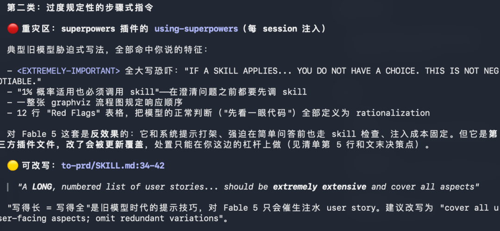
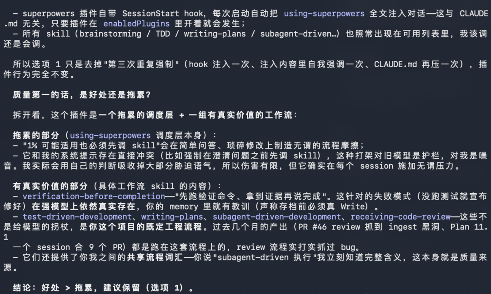

十几个小时前，Anthropic 发布了新一代大模型 Fable 5（也就是 Mythos）。我干的第一件事，不是让它写代码，而是把官方的发布报告和提示词指南，从头到尾读了一遍。
读到其中一处时，我停住了。
官方说：为旧模型开发的 Skill，对 Fable 5 来说往往"过于规定性"，可能反而降低输出质量。又说：宁可给它方向性的指令，也别替它规定步骤——原话是，"Claude 的推理，经常超出人类所能规定的范围"。
用大白话翻译：对一个足够聪明的家伙，告诉它你要什么结果就够了；过程教得越细，它反而干得越差。再也不用婆婆妈妈的去写指导型的 prompt 了。
新时代到来了，使用模型的方式要大幅简化和轻松了。然而，我一下子想起来我用的一堆 skill 里面的指令，我可是都读过，很多不仅细还很啰嗦，一堆禁令和必须之类的指令。而且，进一步，既然 Fable5 更懂做事了，是不是很多 skill 会过时了？比如说，我最喜欢的 Superpowers。
得跟不混 AI 编程圈的朋友交代一下这是个什么分量的东西：Superpowers 是今年最红的开源 Skill ，一月份被 Anthropic 官方收进 Claude 插件市场，四月份 GitHub 星标突破 12.1 万，是今年增长最快的开源项目之一。而对我来说，它的分量还要再加一层——它是我在 Opus 4.6、4.8 时代最喜欢、逢人就推的插件，没有之一。 有了它，我整个项目都用 TDD（测试驱动开发）的方式推进：先写测试、再写实现、完成必须验证。我的代码经常一次性跑通，项目成功率高得让我自己都意外。说它替我省下了成倍的时间，不夸张。
不少著名的插件里，写满了什么：满屏大写的 "YOU MUST""NOT NEGOTIABLE"，还有那条 superpower 里面著名的规则——"哪怕有 1% 的可能用得上某个 Skill，你也必须调用它"。
这些话，是写给那个会偷懒、会跳步骤、会谎报完成的旧模型看的。可现在坐在工位上的，还是那个需要被吼着干活的实习生吗？
我立刻把这个疑问抛给了 Fable 5 本人。
它的回答很坦率：为防止旧一代模型偷懒、越规矩而写的强负面约束和恐吓式语气，确实会干扰它的发挥。接着，它给了我一份自检提示词，让我拿去扫描自己装的所有 Skill，看看哪些已经不合时宜。
这份提示词我一字不动贴在这里，你可以直接拷走，扫一扫自己的项目：
请审查本项目的 CLAUDE.md 和所有 skills/自定义指令文件，目标是为 Fable 5 做现代化精简：
1. 找出所有要求"展示思考过程/解释推理/show your thinking"类的指令，全部列出来，建议删除；
2. 找出过于规定性的步骤式指令（逐步操作清单、过度细化的格式要求），标记出来——这些是为旧模型写的，可能反而降低你的输出质量；
3. 保留的应该是：项目背景、技术栈约束、文档优先级规则、明确的禁止事项。
先给我一份"建议删除/保留/改写"的清单，不要直接改文件。我确认后你再执行修改。扫描结果出来，重灾区正是 Superpowers 的调度层——那个每次会话都自动注入的 using-superpowers。Fable 5 列出的"旧模型胁迫式写法"，条条扎眼：
• <EXTREMELY-IMPORTANT>标签里全大写恐吓："IF A SKILL APPLIES... YOU DO NOT HAVE A CHOICE. THIS IS NOT NEGOTIABLE."（只要有 Skill 适用……你没有选择。这没得商量。）• "哪怕 1% 的概率适用，也必须先调 Skill"——连澄清问题之前，都得先走一遍仪式； • 一整张流程图，规定它的响应顺序； • 一张 12 行的 "Red Flags" 表格，把模型的正常判断（比如"先看一眼代码"）全部定义为"找借口"。
它的结论是：这套东西对它是反效果的——和系统提示打架、强迫它在简单问答前也走 Skill 检查、每个会话都白付一遍注入成本。它形容这套机制的一句话，我印象很深：
"这种打架对旧模型是护栏，对我是噪音。我实际会用自己的判断吸收掉大部分胁迫语气，所以伤害有限，但它确实在每个 session 施加无谓压力。"

更有意思的是它给的处置方案。它发现这套强制其实被重复压了三遍：插件钩子每次启动注入一次、注入内容里自我强调一次、CLAUDE.md 里再压一次。它建议的动作，小到出乎我意料：只删掉 CLAUDE.md 里那一行"第三次重复强制"，插件行为完全不变。 它没有劝我卸载 Superpowers——这个 12 万星的框架至今还好好装着；某种意义上，只是削弱了它的强制约束力。理由它也说得直白："对这种胁迫式提示有一定免疫力，留着主要是 token 成本。"
我确认之后，它执行了。当天下午，松了绑的 Fable 5 跑起来——效果反而更好。
你品品这个反差：我最推崇的神级插件，它最引以为傲的强制机制，在新模型眼里成了"对我是噪音"。这指向一个更本质的问题：这几年我们辛辛苦苦给 AI 立下的一条条规矩，到底是在帮它，还是在绑它？
一、Skill 其实一直在干两件事：定规程，和递情报
黑羽师兄按第一性原理拆解了一下：把市面上所有 Skill 拆开看，里面其实混着两种完全不同的成分。
第一种成分，是"规程"。 它管两头：既规定你必须做什么——先头脑风暴再写码、必须一步一步思考、宣布完成前必须验证；也规定你绝不能做什么——NEVER 跳步骤、禁止不写测试就提交，再配上恐吓式的语气压阵。用大白话说，这就是给学徒写的菜谱加厨房规章：盐放三克、先煸葱姜再下肉，严禁开大火、严禁尝都不尝就出锅。这套东西存在的唯一理由，是学徒靠不住——会偷工、会跳步、会把糊了的菜端出来说"好了"。
第二种成分，是"情报"。 米其林主厨第一次进你家厨房，你不用教他颠勺——但有几句话你必须说：孩子对花生过敏，老人牙口不好要炖软，你家灶火偏猛，酱油是减盐的。这些话不是教他做菜，是告诉他只有你知道、他再厉害也不可能知道的事。换到项目里，就是你的项目约定、公司的代码规范、某个 API 的出口 IP 会在两个机房之间轮换的怪癖、你个人的审美偏好。
Fable 5 时代真正的变化，就一句话：规程大面积失效、甚至变成负资产；情报的价值不降反升。
为什么规程会"降低质量"，而不只是浪费几个 token？因为规程的本质，是把模型锁死在一条为弱者设计的路径上。学徒照菜谱做，能保证不难吃；主厨照菜谱做，做出来的就只能是一盘"合格的学徒菜"——他明明有更好的火候、更好的顺序，你的菜谱不许。注意，"必须做什么"和"不许做什么"在这里是同罪的：强制 step by step 思考这类"正面要求"，对 Fable 5 同样是累赘，因为它可能找到比你规定的步骤更好的路。
二、点名时间：你装的这些 Skill，哪些过时了
像这样的 Skill 太多了。按这个框架，把大家最熟的几类拉出来，挨个过堂。
Superpowers：一个拖累的调度层，加一组有真实价值的工作流。 这是 Fable 5 自己给出的拆解，比任何外部评论都准，正好对上"规程 vs 情报"两种成分。
拖累的是调度层——强制触发、1% 规则、Red Flags 表格，纯规程，上面已经数落过了。这套设计哲学的来历，作者 Jesse Vincent 的"烟雾测试"说得明明白白：打开编程助手，输入"做个 React 待办清单"，如果它直接开始写码，我就失败了；如果它先启动头脑风暴，对的事情才算发生。在旧模型时代这完全正确：模型不会自己停下来想，所以要逼它。但 Fable 5 面对模糊任务本来就会先调查、先界定范围——再逼它走全套仪式，等于让博士生做口算也必须列竖式。有意思的是，作者自己也在拆：今年 5 月的 5.1 版，他亲手删掉了一批废弃命令和"不能改善结果的旧样板文字"。规程的退役，写规程的人比围观群众看得早。
而有真实价值的，是那组工作流的内容：test-driven-development、writing-plans、subagent-driven-development、receiving-code-review——用 Fable 5 的原话说，"这些不是给模型的拐杖，是你这个项目的既定工程流程"。它还点出一层容易被忽略的价值：共享流程词汇——我说一句"用 subagent-driven 方式执行"，它立刻知道完整含义，这本身就是质量来源。再加上它讲单元分解的工程标准（"每个单元一个清晰目的、定义良好的接口、可独立测试"）——这些是情报，依然值钱，只是不必再强制注入。一句话总结：同一个插件里，规程在退役，规范和词汇在留任。

过度规定性的"正面要求"，同样中枪。 我的扫描清单里还有一条典型：某个写需求文档的 Skill，要求 user story 列表"必须写得极长、覆盖所有方面"。Fable 5 的批注一针见血："写得长 = 写得全"是旧模型时代的提示技巧，对它只会催生注水的 user story——建议改成"覆盖所有面向用户的方面，省略冗余变体"。你看，这就是前面说的："必须做什么"和"不许做什么"，同罪。
防谎报类：verification-before-completion。 这条要说得公道。它针对的失败模式——没跑测试就宣称"修好了"——在强模型上依然真实存在，所以"先拿证据、再说完成"这个思想一点没过时；过时的是把它包装成强制仪式的载体。官方现在一句"汇报前对照工具结果审计每条声明"，就能达到同样的效果。思想赢了，载体退役。
反思展示类：show-your-thinking 及一切要求模型在回复里复述内部推理的指令。 不只是过时，是主动有害。这类指令在 Fable 5 上会触发推理提取方向的安全拒绝，请求直接回退到旧模型执行。你应该注意到了：上面那份自检提示词的第一条，就是它。这是唯一一类，黑羽师兄建议你今天回去就清干净的。
多代理编排框架（agent-to-agent 一族，以及 dispatching-parallel-agents 这类并行派遣 Skill）：被内化得最彻底。 旧时代那些精巧的角色定义、消息协议、轮转机制，大部分工作 Fable 5 自己就干了——它原生就能派遣并行子代理，并可靠管理与长期运行的子代理、对等代理之间的持续通信。官方文档甚至反过来提醒：它派子代理太积极，需要的是降温，不是催促。但有一样没有被取代：边界和协议本身。哪些任务可以委派、子代理的权限范围多大、人类在哪些节点必须介入——编排的"执行"内化了，编排的"治理"还在你手里。
反而升值的，是纯情报类。 Anthropic 自己给 Claude 配的 docx、pptx 文档处理 Skill，通篇是软件库的怪癖、渲染的陷阱——这些再聪明的模型也无法凭空知道。你的写作风格档案、你积累的品味数据库——模型能力再强，也替代不了"你想要什么"。项目级的文档优先级规则、硬性禁令。还有记忆系统——官方明确说，这是 Fable 5 用了之后表现特别好的东西，是少数被新模型"升值"而非"贬值"的 Skill 类型。
三、那新时代的 Skill 该怎么写？四条原则
Skill 不会消失，但它会发生一次"体裁"的转变——从程序，变成情报。具体落到写法上，四条：
第一，声明式，不要过程式。 写"什么算完成、什么不可接受、有哪些约束"，不写"第一步做什么第二步做什么"。把 how 留给模型，你只负责 what 和 why。
第二，原则替代枚举。 官方自己的发现：一条简短的原则性指令，效果等同于逐个列举每种行为模式。旧 Skill 里的十条规则，新 Skill 里可能就是一句原则。
第三，知识密度是唯一护城河。 一个 Skill 的价值，等于它包含多少模型不可能自己推导出来的信息：环境的坑、领域的暗知识、你的品味、组织的约定。纯靠"管教模型"的 Skill，价值正在归零。
第四，让模型参与维护。 Fable 5 很擅长根据手头任务学到的东西，即时更新 Skill——Skill 正在从一部静态的法律，变成你和模型共同维护的活文档。往远看，它会和记忆系统逐渐融合成同一个东西。
四、看远一点：什么会被吞掉，什么永远吞不掉
那么，Skill 将死吗？要回答这个问题，得先画一条线。
模型的能力来自训练，训练来自数据。所以这条线很硬：凡是能从公开数据中学到的通用能力，最终都会被模型吸收；凡是私有的、局部的、偶然的、关乎偏好的信息，原则上永远无法被预训练吸收——不是模型不够强，而是这些信息根本不在它能接触到的分布里。你公司的架构决策、你的审美、你和合作方的约定，再强的模型也只能被"告知"，不能被"学会"。
所以 Skill 不会消亡，但它正在经历一场持续的蒸发：通用方法论的部分不断蒸发进模型本体，剩下的残留物越来越纯——纯粹的私有知识、意图和规范。这正是我这两天亲眼看到的过程：Superpowers 里"先 brainstorm 再写码""完成前必须验证"蒸发了，而"什么算一个好的单元分解"这类工程品味、我项目里特有的约定，留了下来。
而且这场吸收不是意外，是一条已经制度化的流水线。回看历史，这个循环一直在跑："think step by step" 曾是社区的魔法咒语，变成了推理模型的原生行为；反思和自我批评的提示技巧，变成了原生验证习惯；社区的多代理编排框架，变成了 Fable 5 的原生子代理调度。模型厂商一直在观察 Skill 生态里什么东西被大量使用，然后把被验证有效的共识，训练进下一代模型。
这意味着 Skill 生态和模型的关系，根本不是竞争，而是研发前哨：Skill 是用户用最便宜的方式——写文本——表达"我希望模型默认就会做的事"，厂商负责收割其中的共识。Skill 社区，等于在给模型写需求清单。所以"当红 Skill 被淘汰"不该被理解为失败——一个 Skill 被模型吸收，恰恰是它最大的成功，就像一个第三方库的功能被吸纳进语言标准库。lodash 的大半功能进了 ES6，jQuery 死于浏览器 API 的成熟，但"库"这个物种从没消失——它们只是不断往更高的抽象层爬。Skill 也一样：行为层被吸收后，它会爬到知识层、意图层、治理层。
再往后看几年，黑羽师兄几乎可以确定地说，"Skill"作为独立品类的边界会模糊，逐渐和三样东西融合成一个连续体：
一是记忆。官方已经在引导这个方向——让模型自己维护教训文件、即时更新 Skill。静态的人写文档和动态的模型笔记之间的界限会消失，最终就是一层"这个 agent 关于这个人、这个项目所知道的一切"。
二是身份。当 Skill 里剩下的主要是品味、规范、价值排序时，它实际上定义的是：这个 agent 是谁、替谁工作、按谁的标准做事。未来大家可能用的是同一个底模，agent 之间真正的差异，恰恰在它携带的这层私有知识和人格。从这个角度说，Skill 的终极形态，是 agent 的灵魂文件——这是节点之间真正稀缺的东西。
三是协议。工具调用走向了 MCP 这样的标准协议，知识注入大概率也会协议化——一种跨模型可移植的知识封装格式。这反而是 Skill 长期独立存在的最强保障：底模会换，今天是 Fable，明天可能是别家，但你沉淀的知识层不该跟任何一家绑定。模型是可替换的引擎，Skill 层是不可替换的资产——资产端永远独立于引擎端存在，这是经济结构决定的，不是技术决定的。
五、两盆冷水
写到这里，必须泼两盆冷水，免得有人看完就回去删库。
第一，别矫枉过正到"零指令"。 官方文档自己仍在推荐显式的边界声明、证据审计、定期验证。Fable 5 需要的不是"没有规则"，而是"更少、更原则层面的规则"。撤掉的是菜谱，不是"孩子对花生过敏"那句话——而且模型越自主，"哪些东西不能动、动之前先问我"这类权力边界，反而越要寸土不让。Fable 5 建议我删 Superpowers 的强制行时，可没建议我动"发布前必须经我确认"那道门。这个分寸，本身就值得细品。
第二，一个工程现实：Fable 5 带安全分类器，特定请求会被自动回退到旧模型 Opus 4.8 执行——而旧模型恰恰更吃详细指令那一套。规程全删光的结果是：回退发生时，接手的弱模型在裸奔。稳妥的做法，是把核心纪律压缩成几行简短原则留在 CLAUDE.md 里（两代模型都受益），把详细的过程式内容归档而不是删除——万一哪天需要长期跑旧模型，还能捞回来。
六、最后剩下的那个核
把推演推到极限：假设模型能力无限强，Skill 还剩什么？
剩下"你想要什么"。
能力解决的是 can 的问题；Skill 最终承载的是 want 和 should——偏好、授权边界、责任归属。这三样东西在结构上长在人这一侧，模型再强，只能更好地"理解"它们，永远不能替你"拥有"它们。而且模型越自主，把意图说清楚的杠杆越大——一个能自主干一周活的 agent，开工前那份意图文档的价值，是旧时代的一百倍。
所以把判断摊开说清楚：短期（一两年内），行为矫正类 Skill 加速贬值，知识类 Skill 升值，整个生态洗一次牌；中期，Skill 与记忆、身份系统融合并走向协议化，成为跨模型的私有知识层；长期，它收敛为意图和规范的容器——体量越来越小，单位价值越来越高，而且永久独立存在。
说到底，模型和 Skill 回答的，根本不是同一个问题。模型回答的是"能不能做到"——这个问题，能力的进步会一路替你回答下去；Skill 最终承载的是"要什么、该不该"——这个问题，从来只有你能回答。
能力的进步不会让第二个问题消失，只会让它越来越值钱。
最后，给你留一个今天就能做的动作。
别光看热闹——把文章开头那份自检提示词拷走，回去把你自己的工程扫一遍。那些为旧模型写的限制，可能正在悄悄压着你手里 Fable 5 的能力。我自己扫完是真吓了一跳：除了 Superpowers，连我那些做 UI、UE 设计的提示词 Skill 里，都翻出一堆过时的东西要删。
不扫不知道，一扫吓一跳。扫得越干净，跑得越痛快。
现在就去看看：你的 Skill 里，有多少还在拦着 Fable 5 思考？
--------------------------------
另外看下面，前天这篇文章⬇️⬇️⬇️：其实，Fable 5 的加速发布，也意味着上一篇文章的奇点已经快速降临中了